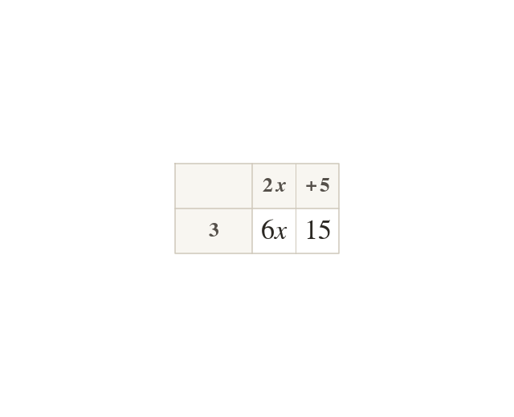

Expanding a single bracket
Expanding multiplies every term inside the bracket by the term outside. So
A negative outside multiplies every term too:
Expanding a bracket means multiplying every term inside it by the term (or number) outside. means lots of : multiply both and by giving
If the term outside is negative, e.g. the negative multiplies every term inside too: and giving - the sign of the second term flips because a negative times a negative is positive.
If the term outside is negative, e.g. the negative multiplies every term inside too: and giving - the sign of the second term flips because a negative times a negative is positive.